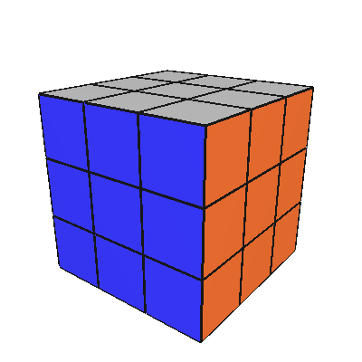
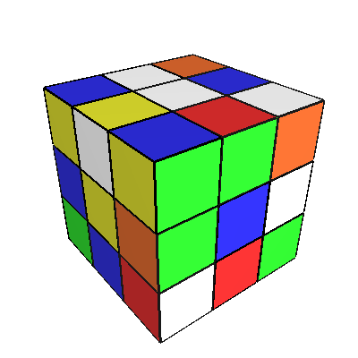
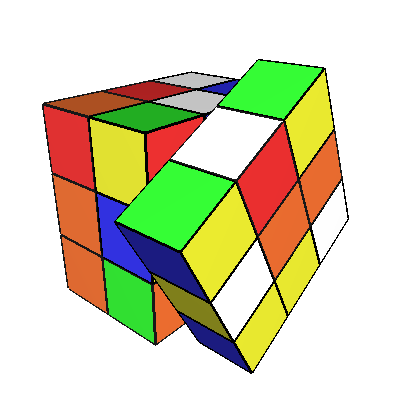

Gruppen består av Torkild Retvedt (torkildr) og Martin Øinæs Myrseth (martinom). Og timelisten vår som spesifiserer når vi har jobbet på prosjektet.
Prosjektoppgaven baserer seg på en rubik's kube som er en kube som består av flere mindre bokser. Boksene på hver side har samme farge i utgangsposisjonen til kuben, slik at man har ni bokser med samme farge på hver side. Her er noen renderinger av vår kube:
  
Over ser man en Rubik's kube i tre forskjellige tilstander. Den første er en kube i sin opprinnelige, eller løste, tilstand. Den andre er en kube som har blitt rotert i diverse retninger slik at den kan løses. Den siste er en uløst kube hvor man holder på med å rotere den ene siden.
Prosjektet vårt går ut på å animere og løse en Rubik's kube. Animeringen av kuben skal gjøres i OpenGL via Python sine OpenGL C-bindinger. Løsningsalgoritmet er ikke skrevet av oss, men hentet fra denne siden. Kildekoden derifra er GPL-lisensiert så vi står frie til å benytte oss av den. Løseren er skrevet i C++, noe som betyr at vi må skrive C++/C-bindinger til den for å kjøre algoritmen fra Python.
Når man har 'rubik-1.0.tar.gz' filen generert med
'python setup.py sdist'
vil man pakke den ut med: 'tar xf rubik-1.0.tar.gz'. Det blir
da generert en katalog hvor prosjektet blir satt opp i riktig mappestruktur. For
å bygge prosjektet kjører man bare 'python setup.py build'
og mappen 'build' blir generert. I build genereres det
flere kataloger, men det man skal kjøre ligger i 'lib.xxx-xxx'.
Fra denne mappen kjører man programmet
med 'python rubik.py'. En oversikt over kommandoene man kan utføre
under kjøringen av programmet skrives til terminalen når progmmet
starter.
'n' - Ny kube, sett i løst tilstand.
's' - Sett i gang løsing av kuben. Fungerer kun for (3x3x3).
'a' - Avbryt løsningen av kuben.
Hvis man vil fortsette fra et punkt.
'r' - Roter kuben til et problem som man kan sette i gang å løse.
'+' - Zoom in, eller øke størrelsen på kuben.
'-' - Zoom ut, eller minske størrelsen på kuben.
'h' - Skriv kommandolisten til terminal.
'q' - Avslutt programmet.
Prosjektet har vist seg å ikke bli så alt for stort sånn med tanke på antall linjer kode. Derimot så er nesten all funksjonaliteten som skal implementeres relativ kompleks i gjennomføring. Det har vist seg at mye av koden vi har skrevet krever en god del planlegging og utregning for at alt skal klaffe. Spesielt når det kommer til dette med rotering av de diverse delene av kuben. Et eksempel på dette er å registrere en siderotasjon. Bak denne delen av oppgaven ligger det mye frustrasjon og tid.
Vi har skrevet noen småtester for noen deler av implementasjonen vår. Dette er unittester. Vi har ikke skrevet noen form for regressjonstest av prosjektet i og med at unittestene tester de enkelte delene som inngår i selve prosjektet. Det å teste hele implementasjonen med regressjonstester vil være litt problematisk på grunn av prosjektets visuelle faktor.
Kuben visualiseres og manipuleres i et tredimensjonalt miljø. Rotasjon av selve kuben og av sidene gjøres med kommandoer med musen. Klikker man på en av hjørnekantene på den siden man vil rotere så initialiserer man en siderotasjon. Klikker man noe som helst annet sted så roterer man selve kuben. Beveger man musen i x-retningen, dvs horisontalt, så vil man rotere den valgte siden rundt y-aksen, dvs den loddrette aksen. Denne rotasjonen er uavhengig rotasjonen av kuben. Beveger man musa i y-retningen, dvs vertikalt, så vil man rotere den valgte siden enten rundt x-aksen eller rundt z-aksen. Ser man på kuben rett forfra eller rett bakfra vil man rotere rundt x-aksen, mens om man ser kuben fra høyre eller venstre vil man rotere siden rundt z-aksen. Dette regnes ut i fra hvilke av sidene som er nærmest synspunktet.
Selv om grafikkdelen er bindeleddet i hele prosjektet her har vi ikke brukt alt for lang tid til å legge til ting som anti-aliasing også videre. Så lenge vi har en representasjon av kuben vår som kan manipuleres og som kan demonstrere løsing så holder den implementasjonen vi har nå. Litt snedig må man få lov til å si at den automatiske løsningen av kuben er.
Løseren vi fant egnet seg veldig godt, både fordi den forenkler prosessen for løsing av kube, og fordi denne laget grunnlag for et hensiksmessig API mot Python. Cubex klassen (som det den eksisterende C++ klassen tilbyr) har i tilegg gode muligheter for å kontrolleres utenifra (og er laget for nettopp dette).
Vi valgt å skrive bindingene/logikken mellom Cubex-klassen og vår Cube-klasse i Python sin C API. Denne fungerere godt mot C++, og vi slapp unna noen problemer som viste seg eksistere ved å eksportere Cubex-klassen til wrapper-kode med swig (ikke minst blir koden ca 8000 linjer kortere, og derfor mest sansynligvis raskere). En annen grunn til å velge denne tilnærmingen er at vi kun har lyst til å bruke et lite subset av funksjonaliteten i Cubex-klassen, da vi håndterer det meste av rotasjonsutregninger på egenhånd.
Det skal sies at løsningen vi bruker her ikke er optimal. Dette er ganske naturlig da det både er veldig komplisert og tidkrevende (både i koding og ressursbruk). Ved testing ser vi at de fleste tilfeldige kuber ender opp med en ca 80-110 flytt, noe som ikke er så veldig dumt, da det er fint å se på...
For å få Cubex-klassen til å tolke vår kube korrekt er vi nødt til å gjøre en
konvertering mellom klassene. Dette gjøres i wrapper-koden vår (altså solver.cpp.
Denne overfører/konverterer relevant informasjon fra hver enkelt boks i Cube-klassen
og sørger for at det havner på rett sted i løseren. Denne konverteringen finner sted
ved hvert manuelle flytt (vi bruker Cubex til å finne ut om en kube er ferdigløst).
Tidsmessig viser dette seg å være uproblematisk, da boksen alikevel er avhengig av
input fra bruker.
Hovvedvekten av den implementasjonen vi har gjort ligger helt klart i koden som simulerer og visualiserer kuben, dvs alt av tegning og rotering. Vi har benyttet oss av PyOpenGL som er C-bindinger mot OpenGL. OpenGL støtter kun rendering og visning av objekter i et tredimensjonalt miljø, så man må bruke et annet bibliotek for å vise selve vinduet. Her har vi brukt GLUT som er en wrapper rundt OpenGL kontekster for å håndtere interaksjonen mot vindusystemet. Både OpenGL og GLUT er skrevet for å være så kryss-kompatible som mulig med de fleste store operativssystemer. Man behøver altså PyOpenGL for å kjøre prosjektet vårt. PyOpenGL inneholder både de vanlige, standard funksjonene i OpenGL: GL, GLU og GLX, pluss GLUT og noen flere småting vi ikke har tatt i bruk.
Det er flere ting som kunne vært utbedret og lagt til kubeimplementasjonen vår. Noe av det mer vesentlige som mangler er at vi har ikke lagt til muligheten for å laste inn en forhåndsdefinert kube slik at simulatoren kan løse kuben visuelt for brukeren. En annen ting som er litt halvveis er brukerinput mens den automatiske kubeløsningsfunksjonen er i gang. Man kan ikke rotere kuben med noen særlig god kontroll mens kuben løses automatisk. Det lureste er da å bare rotere kuben til en passende posisjon for så å sette i gang løseren.
I og med at dette prosjektet er det første prosjektet noen av oss har utført i OpenGL med 3D-programmering så skal det ikke sees bort i fra at det er en rekke bugs som muligens dukker opp når det passer dårlig. Det er muligens en ting vi har kommet borti som vi ikke har fått testet godt nok. Under en kjøring opplevde vi at en av boksene i kuben plutselig ble borte og ble ikke tegnet skikkelig. Hva det var og hva som forutsaket feilen har vi ikke fått greie på enda.